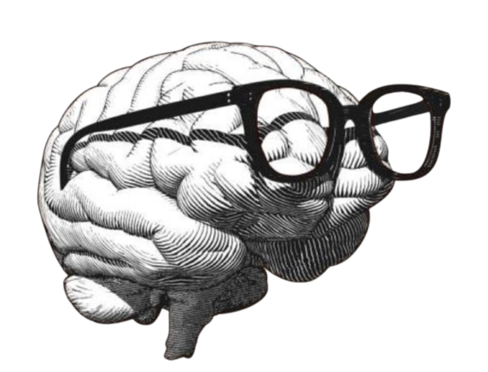

Neuroscience · Data Science · Research
I study the brain because it once confused me.

I hated maths until someone made me feel it. I struggled with emotions until neuroscience gave me a language for them. I grew up being told feelings were weakness — I spent years trying to make sense of my own mind before I ever had the words for what I was doing.
Then I found deep learning. Then I found neuroscience. Something clicked — here was a field that gave reasons to things psychology could not fully explain for me on its own, and maths that felt like poetry once you understood what it was actually measuring.
Now I am a UG researcher at the intersection of both — studying the brain not just as a researcher-in-making, but as someone who genuinely needed to understand it first. I want to build research that gives people peace. The kind that lets you show up fully, think clearly, live without the noise.
I write poetry, trace the neuroscience in the Bhagavad Gita, get lost in music, and believe that emotions are not for the weak. They are data, and they belong to the strong.
I am drawn to questions where computation, consciousness, emotion, and behaviour collide. I care less about flashy buzzwords and more about what actually explains human experience.
How does the brain regulate overwhelming emotion, and what neural signatures reveal whether regulation is adaptive or costly?
What becomes visible when multimodal neural signals are studied together instead of in isolation?
Where do machine learning models genuinely help us understand cognition, and where are they just very confident parrots?
Can ancient philosophical insights about attention, self, and suffering be translated into testable neuroscientific questions?
Research & Publications
Current Research
Neurotech Lab, IIT Hyderabad
Contributing to multimodal neural signal analysis in collaboration with PhD researchers. Signal preprocessing, bandpass filtering, ICA-based artifact removal, and data pipeline development in computational neuroscience.
Mar 2025 — PresentBook Chapter
Empowering Abilities with AI — CHRIST University, 2025
Co-authored with A. Gupta. Enhancing working memory and attention in individuals with intellectual disabilities through adaptive auditory cognitive stimulation. pp. 145–155.
2025Projects
A grid-based geospatial framework integrating environmental and architectural indicators relevant to cognitive load and stress. Cognitive vulnerability profiles derived using dimensionality reduction and spatial analysis.
A structured framework to analyse extracurricular activities through behavioural and competency-based dimensions, with mappings between activities, roles, and graduate attributes for longitudinal assessment.
Studied how KNN and MICE imputation influence behavioural skip-rate prediction on a 114k-track Spotify audio dataset. Feature engineering pipeline combining audio features and metadata to model user listening behaviour.
Some books teach facts. Some quietly rearrange your brain chemistry. These are a bit of both.
Krishna said it first. The Gita describes consciousness, emotion regulation, and the mind-body connection in ways neuroscience is only now catching up to. I love tracing those threads.
I write poetry at the intersection of science and feeling. Language is how I process what data cannot fully capture. I also love Hindi deeply — its texture holds feeling differently than English does.
Music makes the brain do everything at once. I am fascinated by how it moves through us — emotionally, neurologically, culturally. It is the most efficient signal we have ever invented for meaning.
Deeply grateful — for confusion that led to curiosity, pain that led to understanding, and every book and moment that has made me who I am becoming.
I want to know the why behind the why — in human behaviour, in mathematics, in scripture. Depth is not optional for me; it is the only way I know how to think.
I spent years being told emotions were weakness. Now I research them. They are not a flaw in our wiring — they are the most sophisticated data system we carry.
The brain is wider than the sky
so let's think together?